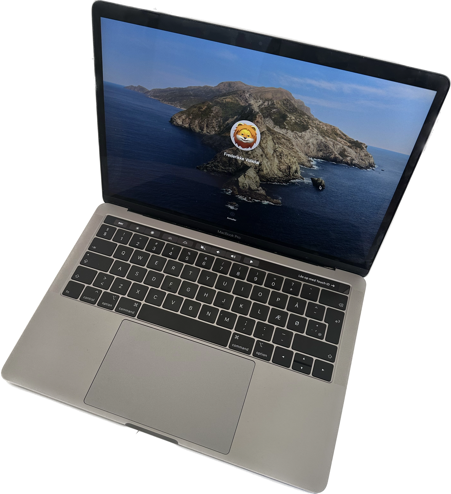

Min computer

Macbook Pro 2019
Min trofaste Macbook Pro er fra 2019. Den har en touchbar på tastaturet, hvor du styrer fx lydniveau og lysstyke. Man kan også få et "touchbar pet", som er meget hyggeligt. Samt kan jeg bruge fingeraftryk til at låse min computer op og godkende adgangskoder osv.
Specifikationer
- 13 inch
- 1,4 GHz Quad-Core Intel Core i5
- Intel Iris Plus Graphics 645 1536 MB
- MacOS Ventura version 13.5